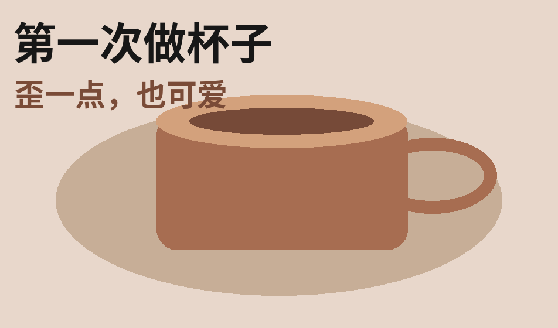

小红书
招聘概念 / NEXT NOTE
让热爱，被看见。
一次收藏背后，是你的创造。
下一篇，写你的职业新篇。

做一只不完美的杯子
示例笔记
从一条笔记，到一种连接。下一次被发现，也有你的参与。
1 / 3
周末不赶路｜发现城市的小美好
把喜欢的街角，分享给同样好奇的人。
#城市漫步 #周末去哪儿 #生活记录
从看见生活，
到一起创造小红书。
把你擅长的，放进每一次发现。
技术 · 产品 · 设计 · 运营
#加入小红书 #探索职业机会
前往官方招聘网站job.xiaohongshu.com↗
岗位信息以官方招聘网站为准
非官方招聘概念 · 界面与内容均为原创示例